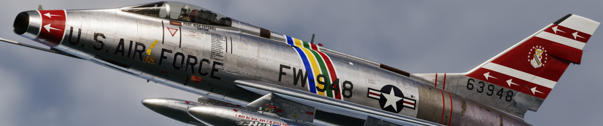
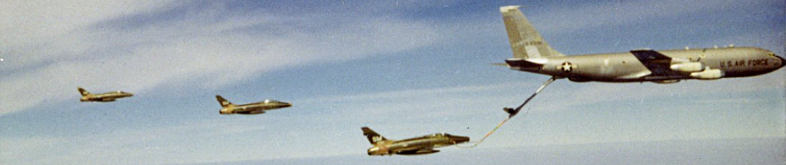
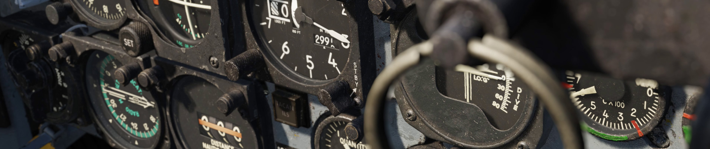

F-100D Super Sabre

Welcome Letter
Dear Community,
We are proud to present the DCS: F-100D Super Sabre by Grinnelli Designs.
The North American F-100D Super Sabre occupies a unique place in aviation history. As the first United States Air Force fighter capable of sustained supersonic level flight, it represented a major leap beyond the legendary F-86 Sabre. Designed during the dawn of the supersonic age and refined through years of operational experience, the F-100D evolved into one of the most important fighter-bombers of the Cold War and became a mainstay of U.S. Air Force operations during the Vietnam War.
Our goal with the DCS: F-100D has been to recreate not only the appearance and performance of the Super Sabre, but also the experience of operating one. To achieve this, we began with an extensively researched cockpit and external model created from thousands of photographs, photogrammetry data, and laser scans of a preserved museum aircraft. Every switch, gauge, panel, and surface has been recreated with meticulous attention to detail, allowing you to step into a faithful representation of one of aviation's most iconic aircraft.
Beyond the visual model, we sought to capture the character of the Super Sabre itself. The F-100 was a pioneering aircraft that demanded skill and respect from its pilots. Its powerful swept-wing design delivered exceptional performance, but it also introduced handling characteristics that rewarded proper technique and punished complacency. Our flight model has been developed using actual short- and long-period stability reports and validated against the experiences of real F-100 pilots. From high-speed maneuvering to the unique low-speed behaviors that gave rise to the infamous "Sabre Dance" every effort has been made to reproduce the aircraft's handling as accurately as possible.
The DCS: F-100D goes far beyond a traditional aircraft simulation. Beneath the cockpit lies a deeply interconnected simulation of the aircraft's systems. The electrical system models realistic voltages, currents, and power consumption throughout the aircraft. The hydraulic system simulates hydro-mechanical fluid flow and physically modeled actuators. The thermodynamic engine model reproduces compressor stalls, surges, ignition characteristics, gearbox behavior, oil systems, and afterburner operation. Multiple engine and probe configurations are available, allowing pilots to experience the distinct operational characteristics of different Super Sabre variants.
Many of the systems you interact with are themselves physically simulated. Cockpit instruments feature realistic inertia, friction, and movement dynamics. The braking system models temperature accumulation, brake fade, and even smoke from overheated brakes. The AN/APR-25 Radar Homing and Warning system recreates radar signal behavior and generates unique audio indications based on detected threats. The result is an aircraft that behaves naturally under both normal and abnormal operating conditions, providing a level of immersion that extends far beyond switch-by-switch system replication.
Combat capability has received the same level of attention. The Super Sabre's four 20 mm M39 cannons, AIM-9 Sidewinders, AGM-45 Shrike missiles, rockets, bombs, and cluster munitions have been recreated in detail. The aircraft's fire control system combines ranging radar, a gyroscopic gunsight, and an early form of computer-assisted weapons delivery, providing a fascinating glimpse into the transition between purely manual and modern computerized attack systems. Configurable strike and gun cameras allow you to record your missions and review weapons employment after the fight, just as real pilots once did.
We have also sought to recreate some of the unique aspects of Super Sabre operations that are rarely represented in flight simulation. You can experience zero-length launch operations, customize instrument layouts to match different aircraft configurations, and fly with cockpit audio recorded from an actual F-100. Combined with our dynamic damage model and detailed systems simulation, these features help bring the aircraft's operational history to life.
A simulation of this depth naturally presents a learning challenge, and we believe learning should be just as rewarding as flying. This manual has been designed to serve both newcomers and experienced virtual pilots alike. Whether you are learning how to start the engine, understanding the aircraft's hydraulic systems, mastering the fire control computer, or studying advanced weapons employment, this manual is intended to guide you step-by-step through the process. Interactive training missions complement the written material, allowing you to immediately apply what you have learned in the cockpit.
The F-100D is not an aircraft that can be mastered overnight. It demands discipline, preparation, and a willingness to understand its strengths and limitations. Yet it is precisely those challenges that make it such a rewarding aircraft to fly. Every successful landing, every accurate bombing run, and every mission completed safely reflects the pilot's growing understanding of a machine that helped define an era of military aviation.
We hope you enjoy learning, flying, and mastering the DCS: F-100D Super Sabre as much as we have enjoyed bringing it to life. Whether you are exploring Cold War operations, reliving the skies over Vietnam, or simply experiencing one of the most significant fighters ever built, we wish you success and many memorable flights ahead.
The Grinnelli Designs Team
History

The F-100D Super Sabre entered service in 1956 as the U.S. Air Force's definitive fighter-bomber. Succeeding the legendary F-86, it was the first fighter aircraft capable of supersonic speed in level flight. Although developed as a day air-superiority fighter, the Super Sabre family eventually saw the F-100D repurposed as a ground-attack platform. Extensive use of the F-100D during the Vietnam War made it the most widely produced variant.
Building on the legacy and performance of its predecessor, the F-100's distinctive 45-degree swept-wing design introduced unique handling challenges at low speeds. In particular, inexperienced pilots could encounter the notorious "Sabre Dance": A phenomenon resulting from increasing adverse yaw, inertial coupling, and wing-tip stall.
The Super Sabre is equipped with four 20 mm Pontiac M39 cannons mounted in the lower fuselage beneath the cockpit, providing formidable firepower. It is capable of carrying up to four AIM-9 Sidewinder air-to-air, infrared-guided missiles for targeting enemy aircraft. The aircraft also features six underwing hardpoints that can carry a total payload of up to 7,040 lb of conventional bombs, rockets, napalm, and the AGM-45 Shrike anti-radiation missile used to attack radar installations. To support both aerial gunnery and air-to-ground bombing, the aircraft is equipped with a fire control system that helps the pilot accurately aim and release weapons.
The Sabre features a 45 degree swept wing, supersonic level flight and in flight ariel refueling capability. Underwing stations can be utilized to maximize range with fuel tanks or add additional ordnance.
Project High Wire

To further enhance operational effectiveness, the F-100D features the "high wire" modification that standardizes instruments and avionics. This includes the AN/APR-25 Radar Homing And Warning receiver (RHAW), which alerts pilots to threats from surface-to-air missiles (SAMs). For example: The RHAW can detect radar emissions from systems like the Fan Song tracking radar that guides SA-2 Guideline missiles.
DCS: F-100D features the Project High Wire modernization. This program also consisted of specific upgrades: electrical and maintenance. Aircraft were re-wired to extend service life and upgrade avionics while extensive maintenance re-vitalized other aspects of the airframe.